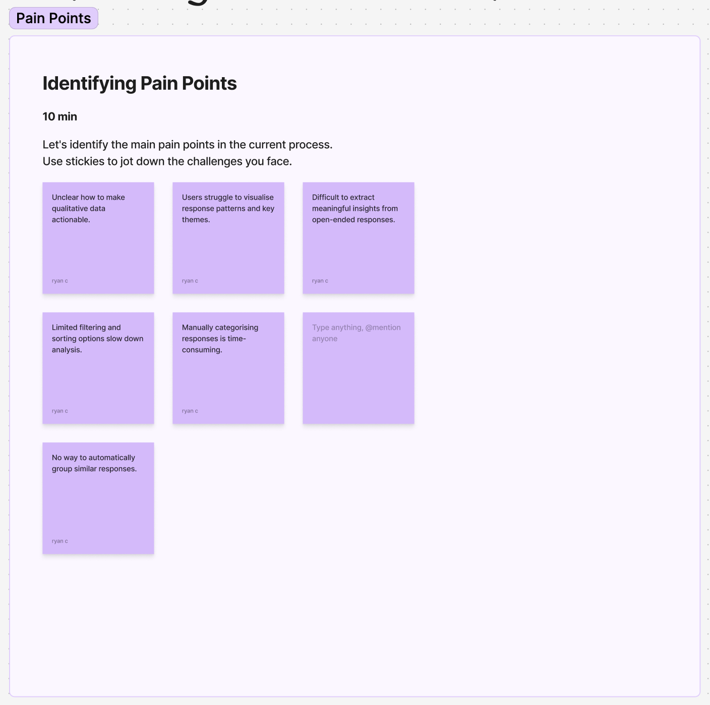
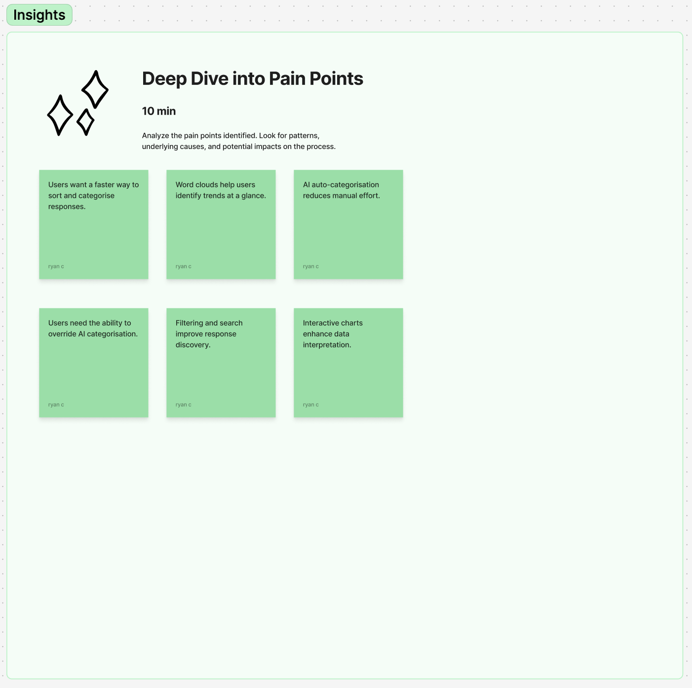
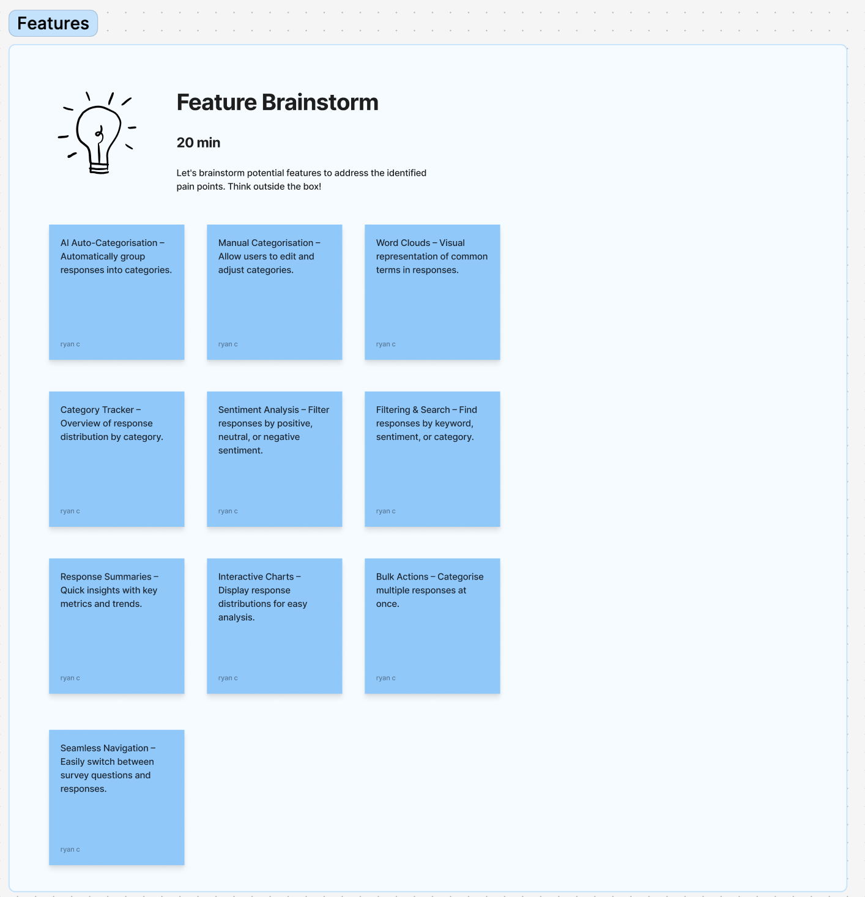
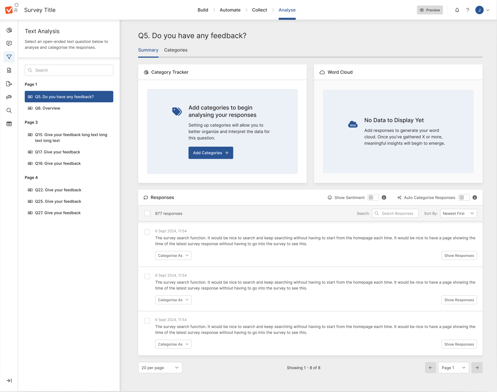
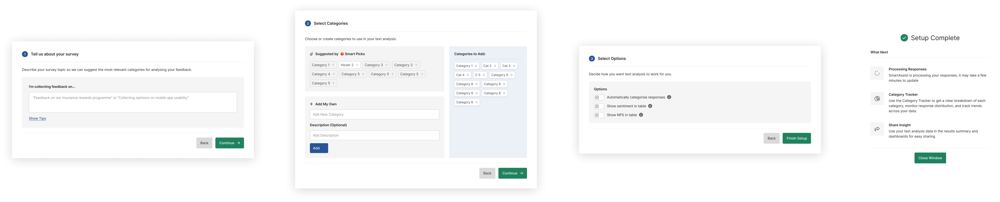
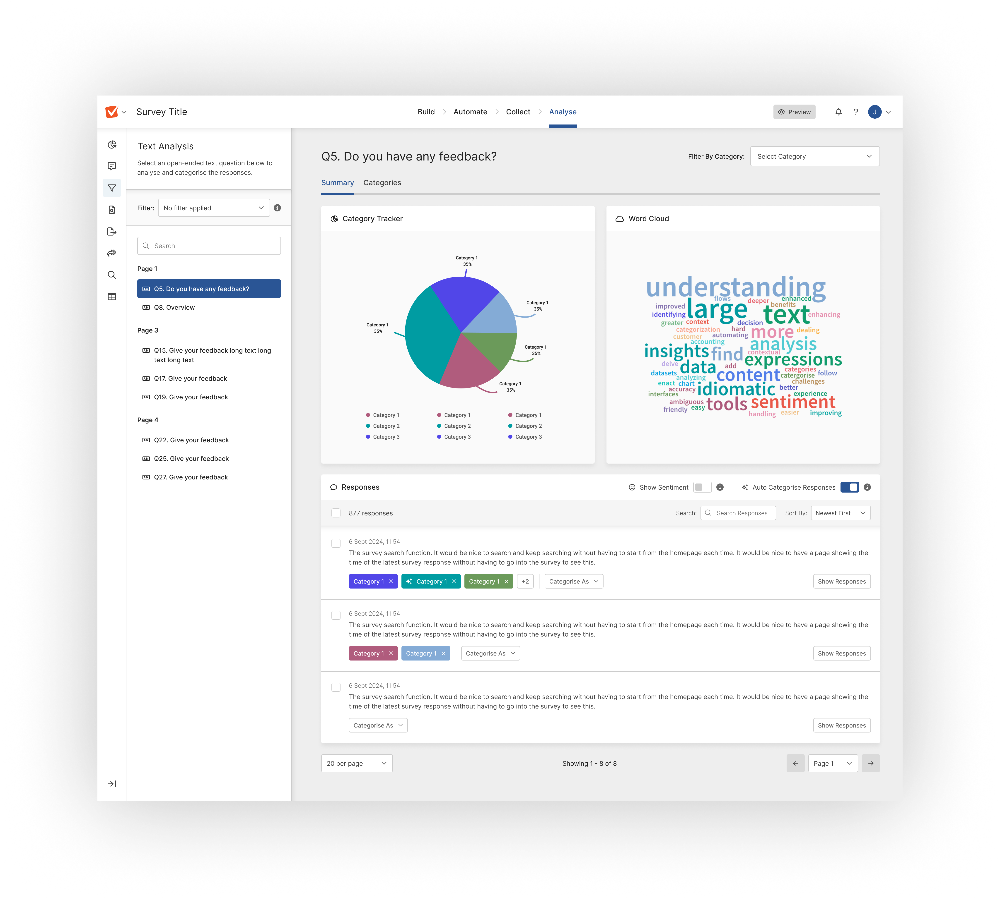
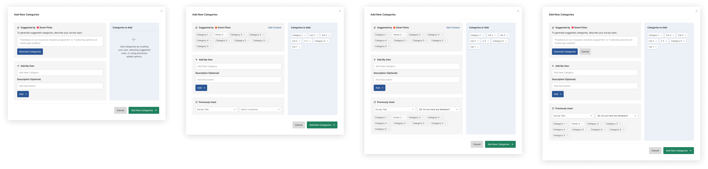
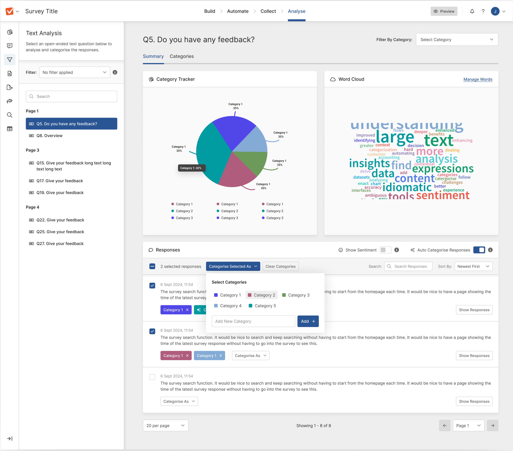
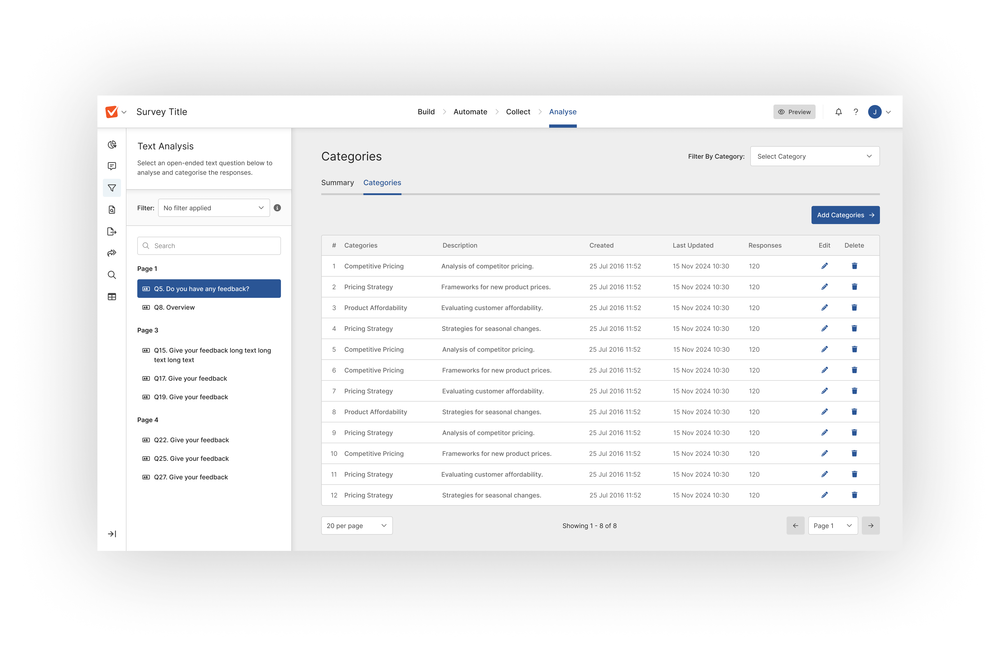

Utilising AI to streamline text analysis and response categorisation

Summary:
We introduced text analysis tools to help users easily understand open-ended survey responses. Features like word clouds, response breakdowns, and AI-driven auto-categorisation made it faster and simpler to organise and analyse data.
My role:
Product Designer
Contributions:
- + User Experience
- + Visual Design
- + User testing/research
- + Design systems
- + Ideation / workshop
Team:
- + Myself
- + 1 Product Manager
- + 1 Customer Success Manager
- + 2 Testers
- + 3 Front-end engineers
- + 1 Back-end engineer
Overview
We enhanced our platform with text analysis tools to simplify how users handle open-ended survey responses. By introducing features like word clouds, response breakdowns, and AI-driven auto-categorisation, we streamlined the process of organising and interpreting data. These updates saved users time, improved engagement, and made data insights more accessible.
- + Conducting and leading user research in collaboration with PM
- + Managing key-stakeholders
- + Leading workshops on ideation and refinement
- + Developing UI elements, visual assets, and interaction designs.
Problem
Users struggled to interpret open-ended responses, spending too much time manually categorising data. This led to delays and inconsistent insights, making analysis a pain point for many.
User and Business Goals
- + Simplify text analysis and auto-categorisation.
- + Save users time with automation.
- + Increase engagement with visual insights.
- + Improve satisfaction by addressing pain points.
- + Align user needs with business growth.
Outcome
- + 32% tool adoption in two months.
- + 27% less time spent analysing data.
- + 25% higher satisfaction with features.
- + 14% boost in user retention.


The process of problem solving

After gathering feedback from 15 users, I explored how they manage and analyse open-ended survey responses. Users highlighted challenges with interpreting qualitative data, drawing actionable insights, and making the analysis process more efficient. These insights guided the development of text analysis and auto-categorisation features to simplify their workflows and enhance usability.
Key Insights:
- “Interpreting open-ended responses is time-consuming. We collect a lot of feedback, but categorising and analysing it for insights is overwhelming without the right tools.”
- “We need better ways to visualise qualitative data, like identifying trends or key themes. It’s hard to extract meaningful insights efficiently.”
- “It’s difficult to identify patterns or themes in responses quickly. Without categorisation, it takes too long to make sense of the data.”
- “Sometimes we’re unsure how to use open-ended responses effectively. They hold a lot of value, but analysing them feels like guesswork.”
Thought process
After identifying key user pain points with analysing open-ended survey responses, I shared my findings with my product
manager and key stakeholders. Users expressed frustrations with the time-consuming process of categorising data, difficulties in identifying patterns,
and the lack of tools to visualise qualitative insights.
To address these issues, I organised an ideation session with stakeholders from customer success, sales, engineering, and product management. Together,
we aligned on the opportunity to introduce text analysis features, such as word clouds, response breakdowns, and AI-driven auto-categorisation. These solutions
aimed to save users time, simplify workflows, and deliver actionable insights.
Problem Defenition
Users struggle to analyse open-ended survey responses efficiently. Categorising qualitative data and identifying patterns is time-consuming and often overwhelming without the right tools. The challenge lies in helping users streamline this process to save time, organise data effectively, and extract clear insights. Our goal is to introduce AI-driven text analysis and auto-categorisation, making data analysis faster, easier, and more user-friendly.
Affinity Diagramming
To address user challenges with analysing open-ended survey responses, we conducted an affinity diagramming session. Using insights from user interviews and competitive analysis, we grouped common themes and pain points, such as the time-intensive process of categorisation and the need for clearer visualisation tools. This process helped us identify opportunities like integrating AI for auto-categorisation and using word clouds and response breakdowns to simplify analysis.
Affinity Diagramming session board



User requirements:
- AI-Driven Auto-Categorisation – Automate response categorisation with AI, allowing manual adjustments.
- Text Analysis Tools – Introduce word clouds and category trackers for data visualisation.
- Filtering & Search – Enable filtering by category, keyword search, and sorting options.
- Response Management – Provide a summary view with key metrics, timestamps, and manual categorisation.
- Visualisation Features – Add interactive charts and sentiment breakdowns for clearer insights.
- Usability & Efficiency – Improve navigation, pagination, and bulk actions for streamlined workflows.
Thought process
We evaluated ideas using an impact/effort matrix and chose to implement AI-driven text analysis and auto-categorisation. This solution was scalable, leveraging AI to handle large datasets consistently and efficiently. It was cost-effective, integrating with our existing AI tools to minimise development time. Most importantly, it addressed user pain points by simplifying data organisation and saving time, delivering clear and actionable insights.
Building the MVP
To create a streamlined MVP, I built upon the existing AI prompt flow. This ensured the feature was easy for users to discover, minimised disruption to ongoing squad work, and leveraged an active user base already engaging with AI-powered functionality.
After defining the requirements, I mapped out how the feature would integrate into the platform, allowing me to move into the design phase.
Text Analysis Dashboard
The text analysis dashboard was designed to help users visualise and interpret open-ended survey responses more effectively. The goal was to make qualitative data more accessible through word clouds, response breakdowns, and filtering options.
Key Insights
- Users wanted clearer data visualisation – While word clouds were useful, users requested additional breakdowns, such as category-based charts to better understand trends.
- Filtering responses was essential – Users needed a way to drill down by sentiment, keywords, and response types to quickly find relevant insights.
- Summarisation helped simplify insights – Many users wanted a quick overview of key themes rather than having to analyse responses one by one.
AI Auto-Categorisation
To streamline the sorting of open-ended responses, AI-powered auto-categorisation was introduced. This allowed responses to be grouped based on patterns, reducing manual effort while maintaining user control.
Key Insights
- Users needed manual control – While AI was helpful, users wanted the ability to override AI-suggested categories to ensure accuracy.
- AI confidence indicators were necessary – Users expressed concerns about trusting the AI’s categorisation, leading to the introduction of confidence scores to help them assess reliability.
- Bulk actions improved efficiency – Users found manually adjusting responses one by one too slow, so a bulk categorisation feature was introduced to streamline workflow.
Thought process
Mapping existing flows clarified priorities and aligned stakeholders on scope and solutions. By handover, the feature was refined through user feedback and internal input. Skipping low-fidelity wireframes improved efficiency, as existing AI workflows reduced the need for early sketches, high-fidelity designs enabled faster validation, and the new design system ensured consistency.
Refining the Hi-fidleity designs
Text analysis is directly linked to the user’s survey, enabling them to analyse open-text responses efficiently. To guide users, we introduced an initial empty state, prompting them to categorise their survey before analysis. Pre-categorisation improved AI accuracy by providing relevant context, ensuring better response grouping and more meaningful insights.
Text Analysis implementation

Guiding Users with the Category Wizard
To improve AI accuracy and give users control, we introduced an initial wizard for adding categories. Users can define categories in one of three ways: providing an initial prompt for AI, manually adding categories, or selecting from previously used categories. This ensures AI categorisation is more precise while allowing users to structure responses in a way that best suits their needs.

Enhancing Analysis with Category Tracking and Word Clouds
Once responses are populated, users gain deeper insights through two key features: the Category Tracker and Word Cloud. The Category Tracker allows users to filter responses by their chosen categories, making it easier to focus on specific themes. The Word Cloud visually represents common words associated with responses, with word size indicating popularity, helping users quickly identify key terms and trends.

Flexible Category Management
Users can refine their analysis by adding categories directly through the Category Tab. This allows them to categorise responses using the same three methods: AI-generated suggestions, manual input, or previously used categories. This flexibility ensures users can adapt categorisation as needed, improving AI accuracy while maintaining control over how responses are organised.

On-the-Fly Categorisation
To streamline the process, a quick categorisation widget allows users to categorise responses without going through the full categorisation flow. This lightweight tool helps users sift through datasets efficiently, reducing steps while maintaining control over how responses are organised.

Category Management Table
The Category Table provides a structured view of all categories, allowing users to edit, manage, and refine them as needed. Users can also add new categories, ensuring they have full control over how responses are organised while keeping the AI categorisation accurate and adaptable.

Next Steps
With the designs finalised, I worked closely with developers to ensure a smooth handover, providing detailed specifications and supporting documentation to streamline implementation. Once built, we launched the feature as a BETA to selected customers, allowing us to gather real-world feedback, identify potential issues, and refine the experience. This iterative approach ensured a stable, user-focused release before rolling it out to all users.
Feedback from Beta users
Following the stakeholder feedback and successful demo, we iterated on the initial design, expanded the AI capabilities to cover additional question types, and improved its reliability. The refined feature was then scheduled into our development roadmap. We implemented a beta rollout plan, using feature flags to release the new feature to 25% of both business and enterprise users. This allowed us to collect targeted feedback and monitor performance, refining the feature based on real-world usage before a broader release.
- 26% of users adopted the new AI feature within the first month
- Users reported a 35% reduction in time spent creating surveys
- Satisfaction scores for the survey creation process increased by 22%
- User retention improved by 10%